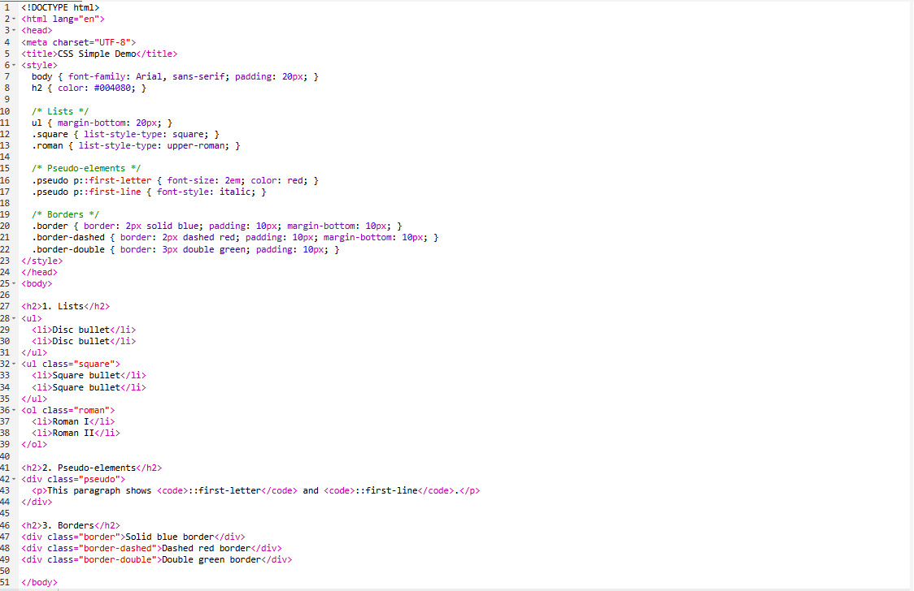
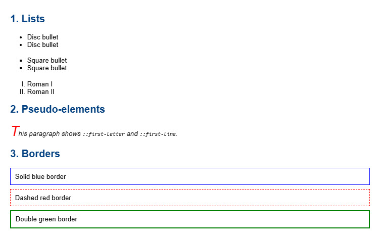

Typography in CSS is about styling and arranging text on a web page to make it readable and visually appealing. Key aspects include:
Font Properties:
font-family – sets typeface (e.g., Arial, Times New Roman) with a prioritized list.font-size – sets text size (px, pt, %, or keywords like medium, large).font-weight – controls thickness (normal, bold, 100–900).font-style – normal, italic, or oblique.font-variant – normal or small-caps.Text Properties:
line-height – spacing between lines.letter-spacing – space between characters.word-spacing – space between words.text-align – horizontal alignment (left, right, center, justify).text-indent – indents first line.color – sets text color.white-space – handles spaces and line breaks (normal, nowrap, pre, pre-wrap, pre-line).word-break – controls line breaks (normal, break-all).Text Decoration & Transformation:
text-decoration – underline, overline, line-through, none.text-transform – uppercase, lowercase, capitalize, none.text-shadow – adds shadow to text with offsets and optional color.Summary: Typography lets you control how text looks and behaves, improving readability, spacing, and overall design.
CSS borders allow you to define the outline around HTML elements. Key properties include style, width, and color.
Border Style:
dotted – dotted linedashed – dashed linesolid – solid linedouble – double linegroove – 3D grooved effectridge – 3D ridged effectinset – 3D inset effectoutset – 3D outset effectnone – no borderhidden – hidden borderBorder Width:
px, pt, cm, em, or keywords thin, medium, thick.border-top-width, border-right-width, border-bottom-width, border-left-width.Border Color:
p.one { border-style: solid; border-color: yellow blue purple pink; }Shorthand Border: Combine width, style, and color into one property for brevity:
border: 2px solid red;Summary: Borders in CSS control the outline around elements. Using style, width, and color properties — or shorthand — makes it easy to create visually distinct sections on your page.
CSS allows you to style lists and specific parts of elements using list properties and pseudo-elements.
List Styling:
list-style-type – sets the type of bullet or numbering:
disc – solid round bulletscircle – hollow circle bulletssquare – square bulletsdecimal – numbers (1, 2, 3…)decimal-leading-zero – numbers with leading zeros (01, 02…)lower-roman – i, ii, iii…upper-roman – I, II, III…lower-alpha – a, b, c…upper-alpha – A, B, C…list-style-image – sets an image as the bullet for the list.Pseudo-elements:
::first-letter, ::first-lineSummary: CSS lists and pseudo-elements give you precise control over list appearance and the formatting of specific parts of text, improving readability and design.


Lesson 1: I learned about Typography in CSS. I can style text using properties like font-family, font-size, font-weight, color, line-height, letter-spacing, text-align, text-transform, and text-shadow to make text readable and visually appealing.
Lesson 2: I learned how to create and style Borders in CSS. I can set border style, width, and color, or use the shorthand property to create solid, dashed, double, or rounded borders around elements.
Lesson 3: I learned how to style Lists and use Pseudo-elements. I can change list bullets or numbering using list-style-type or list-style-image, and format parts of text like the first letter or first line using pseudo-elements.